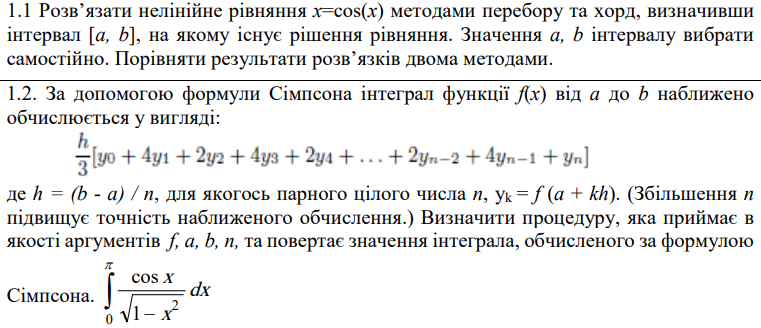
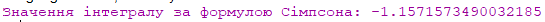

МІНІСТЕРСТВО ОСВІТИ І НАУКИ УКРАЇНИ
КИЇВСЬКИЙ НАЦІОНАЛЬНИЙ УНІВЕРСИТЕТ імені Тараса Шевченка
ФАКУЛЬТЕТ ІНФОРМАЦІЙНИХ ТЕХНОЛОГІЙ
Кафедра програмних систем і технологій
Дисципліна: «Функціональне програмування»
Лабораторна робота №3
на тему: «Форми lambda та let, вираз присвоєння set! для розв’язання нелінійних рівнянь та чисельного інтегрування функцій»
Виконав: студент групи ІПЗ-44мс Євсейчик Віктор
Перевірила: Ніколаєнко Анастасія Юріївна
Київ 2023
Мета роботи
Розв’язати нелінійні рівняння та здійснити чисельне інтегрування функцій наближеними методами, використовуючи мови функціонального програмування та lambda, let та set! форми.
Умови завдання
Код завдання 1
(define epsilon 0.00001) ;Задаємо точність
(define (solve-by-sorting-method a b) ;Функція, що знаходить корінь методом перебору
(letrec ((try-guess (lambda (x) ;Використовуємо letrec для визначення рекурсивної функції try-guess
(if (< (abs (- x (cos x))) epsilon) ;Перевіряємо, чи різниця між x і cos(x) менша за epsilon
x
(try-guess (+ x epsilon)))))) ;Якщо ні, спробуємо наступне значення збільшене на epsilon
(try-guess a))) ;Починаємо спроби з a
(define (solve-by-chord a b) ;Функція, що знаходить корінь методом хорд
(letrec ((next-guess (lambda (x) ;Використовуємо letrec для визначення рекурсивної функції next-guess
(- x (/ (- x (cos x)) (/ (- x epsilon) (- (cos x) (cos (- x epsilon))))))))) ;Використовуємо формулу хорд для обчислення наступного значення
(let loop ((x a) (next-x (next-guess a))) ;Використовуємо рекурсивну функцію loop для пошуку кореня
(if (< (abs (- next-x x)) epsilon) ;Перевіряємо, чи різниця між поточним та наступним значеннями менша за epsilon
next-x ;Якщо так, повертаємо знайдений корінь
(loop next-x (next-guess next-x)))))) ;Якщо ні, продовжуємо пошук з новим значенням
;Визначаємо інтервал [a, b]
(define a -4.2)
(define b 3.8)
;Розв'язок методом перебору
(display "Розв'язок методом перебору: ")
(display (solve-by-sorting-method a b))
(newline)
;Розв'язок методом хорд
(display "Розв'язок методом хорд: ")
(display (solve-by-chord a b))
(newline)
Результати

Код завдання 2
(define (function x) ;Визначення функції (cos(x))/(sqrt(1-x^2))
(/ (cos x) (sqrt (- 1 (* x x)))))
(define (simpsons-rule f a b n) ;h - ширина кожного підінтервалу
(define h (/ (- b a) n))
(define (f-x x) (f x)) ;Функція для обчислення значення f(x)
(define (sum term a b h n) ;Сума для обчислення інтегралу за формулою Сімпсона
(define (iter i sum) ;Внутрішня рекурсивна функція для сумування
(if (> i n)
sum
(iter (+ i 2)
(+ sum (* 4 (term (+ a (* i h))))
(* 2 (term (+ a (* (+ i 1) h))))))))
(iter 1 0.0))
(* (/ h 3.0) (sum f-x a b h n))) ;Застосування формули Сімпсона
(display "Значення інтегралу за формулою Сімпсона: ")
(display (simpsons-rule function 1 0 100))
Результати
Висновок
В результаті виконання цього завдання було успішно розроблено програмний код на мові Scheme, який дозволяє вирішувати нелінійні рівняння та обчислювати інтеграли з використанням різних методів. Реалізація методів перебору та хорд для розв'язання рівняння, а також формул прямокутників, трапецій та Сімпсона для обчислення інтегралів робить дані процедури високофункціональними та універсальними для різних завдань обчислення.